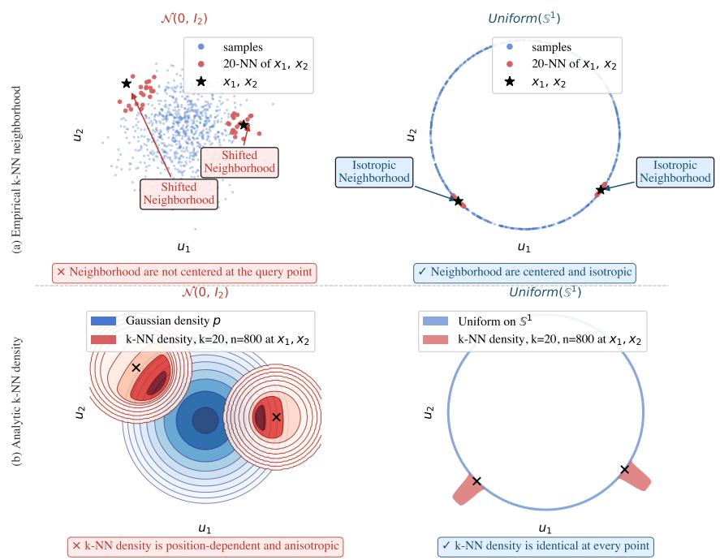

Figureure 2 · : Illustration of the Cramér–Wold characterization underlying SUSReg oFigure 2: Illustration of the Cramér–Wold characterization underlying SUSReg on $\mathbb { S } ^ { 1 }$ . Top row: a mixture of von Mises–Fisher (vMF) distributions—the spherical analogue of Gaussian distributions—induces a non-uniform distribution with mass concentrated around a few directions. The resulting projections $X ^ { \top } a _ { 1 }$ and $X ^ { \top } a _ { 2 }$ deviate from the target density $\rho _ { 2 }$ . Bottom row: a uniform distribution on $\mathbb { S } ^ { 1 }$ yields projections that match $\rho _ { 2 }$ across directions. Histograms compare the distributions of $a ^ { \textsf { T } } X$ to the target density $\rho _ { 2 }$ (solid curve). Non-uniform representations (top) produce mismatched projections and are penalized by SUSReg, whereas uniform representations (bottom) satisfy the projection constraint and are therefore not penalized by SUSReg.这张图来自论文 PDF 的结构化抽取。当前用于辅助理解 SPHERE-JEPA 的方法或实验，请结合正文精读段落一起看。

Figureure 1 · : k-NN neighborhoods are density-biasedFigure 1: k-NN neighborhoods are density-biased. (a) Empirical k-NN neighborhoods (k = 20) at two query points x1, x2: under a Gaussian distribution on $\mathbb { R } ^ { \hat { 2 } }$ , neighborhoods are not centered at the query point but are skewed toward regions of higher density, resulting in anisotropic and directionally biased neighborhoods. In contrast, for a uniform distribution on ${ \mathbb S } ^ { \mathbf { 1 } }$ the neighborhoods are centered and isotropic everywhere. (b) Analytic k-NN density: under a Gaussian distribution, the induced densities are position-dependent and anisotropic, whereas the uniform distribution on $S ^ { 1 }$ yields identical densities at every point, reflecting its intrinsic geometric symmetry.这张图来自论文 PDF 的结构化抽取。当前用于辅助理解 SPHERE-JEPA 的方法或实验，请结合正文精读段落一起看。